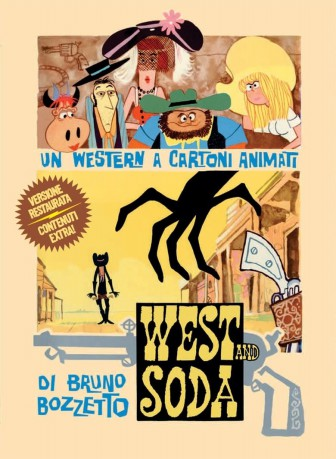

#12038 Der Wildeste Westen
 
 IMDB-Wertung: 7.2 / 10
IMDB-Wertung: 7.2 / 10  Metascore: 0
Metascore: 0 
Der Cowboy Johnny hat sich eigentlich von der Waffengewalt verabschiedet, doch als es ihn in eine kleine Stadt mitten in der Prärie verschlägt, ist schon bald seine Hilfe als Revolvermann gefragt. Hier lernt Johnny die liebreizende Farmersfrau Miss Clementine kennen, die von Rancher Thugs und dessen Schergen tyrannisiert wird, da Thugs hinter dem Land der jungen Frau her ist. Schnell verliebt sich Clementine in den fremden Johnny, in dem sie einen Beschützer sieht und auch wenn sich der Cowboy nicht auf eine feste Beziehung einlassen will, eilt er zur Rettung als sie von Thugs entführt wird...
Jahr: 1965
Dauer: 86 Minuten
FSK: 6
Land: Italien Studio: Neue Filmform Heiner BraunTonspuren:
Untertitel: Deutsch,
Auflösung: 1080p (1792x1080) Größe: 6707 MB
Genre: Komödie, Animation/Trick, Western
Regisseur: Bruno Bozzetto
Drehbuch: Bruno Bozzetto, Attilio Giovannini, Sergio Crivellaro
Soundtrack: Giampiero Boneschi
Darsteller:
- Carlo Romano als Il Cattivissimo
- Nando Gazzolo als Johnny
- Vittoria Febbi als Clementina
- Luigi Pavese als Ursus
- Willy Moser als Smilzo
- Lydia Simoneschi als Esmeralda
- Ferruccio Amendola als Il Cattivissimo's Horse
- Anna Miserocchi als Additional Voice
- Flaminia Jandolo als Dolly
- Gianfranco Bellini als Additional Voice
- Corrado Gaipa als Additional Voice
Datei: X:\Kinder Collections\Bruno Bozetto\Wildeste Westen, Der (1965, FSK6, 1792x1080).mkv seit 16.11.2019
Festplatte: Kinder-Filme+Trick
 Alle Filme aus Gruppe 'Kinder Collections\Bruno Bozetto'
Alle Filme aus Gruppe 'Kinder Collections\Bruno Bozetto'